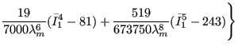
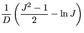
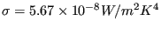
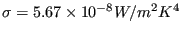
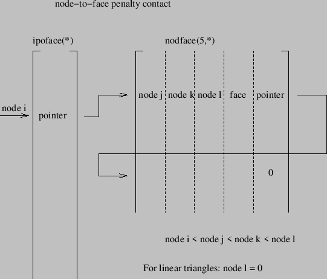
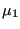

Keyword type: step
This procedure is used to perform a pure heat transfer analysis. A heat transfer analysis is always nonlinear since the material properties depend on the solution, i.e. the temperature.
There are nine optional parameters: SOLVER, DIRECT, STEADY STATE, FREQUENCY, MODAL DYNAMIC, STORAGE, DELTMX, TIME RESET and TOTAL TIME AT START.
SOLVER determines the package used to solve the ensuing system of equations. The following solvers can be selected:
Default is the first solver which has been installed of the following list: SGI, PaStiX, PARDISO, SPOOLES and TAUCS. If none is installed, the default is the iterative solver, which comes with the CalculiX package.
The SGI solver should by now be considered as outdated.SPOOLES is very fast, but has no out-of-core capability: the size of systems you can solve is limited by your RAM memory. With 32GB of RAM you can solve up to 1,000,000 equations. TAUCS is also good, but my experience is limited to the  decomposition, which only applies to positive definite systems. It has an out-of-core capability and also offers a  decomposition, however, I was not able to run either of them so far. PARDISO is the Intel proprietary solver and is about a factor of two faster than SPOOLES. The most recent solver we tried is the freeware solver PaStiX from INRIA. It is really fast and can use the GPU. For large problems and a high end Nvidea graphical card (32 GB of RAM) we got an acceleration of a factor between 3 and 8 compared to PARDISO. We modified PaStiX for this, therefore you have to download PaStiX from our website and compile it for your system. This can be slightly tricky, however, it is worth it!
What about the iterative solver? If SOLVER=ITERATIVE SCALING is selected, the pre-conditioning is limited to a scaling of the diagonal terms, SOLVER=ITERATIVE CHOLESKY triggers Incomplete Cholesky pre-conditioning. Cholesky pre-conditioning leads to a better convergence and maybe to shorter execution times, however, it requires additional storage roughly corresponding to the non-zeros in the matrix. If you are short of memory, diagonal scaling might be your last resort. The iterative methods perform well for truly three-dimensional structures. For instance, calculations for a hemisphere were about nine times faster with the ITERATIVE SCALING solver, and three times faster with the ITERATIVE CHOLESKY solver than with SPOOLES. For two-dimensional structures such as plates or shells, the performance might break down drastically and convergence often requires the use of Cholesky pre-conditioning. SPOOLES (and any of the other direct solvers) performs well in most situations with emphasis on slender structures but requires much more storage than the iterative solver.
If the MATRIXSTORAGE option is used, the conductivity and capacity matrices are stored in files jobname.con and jobname.sph (specific heat), respectively. These are ASCII files containing the nonzero entries (occasionally, they can be zero; however, none of the entries which are not listed are nonzero). Each line consists of two integers and one real: the row number, the column number and the corresponding value. The entries are listed column per column. In addition, a file jobname.dof is created. It has as many entries as there are rows and columns in the stiffness and mass matrix. Each line contains a real number of the form “a.b”. Part a is the node number and b is the global degree of freedom corresponding to selected row (in this case 0 for the thermal degree of freedom). Notice that the program stops after creating these files. No further steps are treated. Consequently, *HEAT TRANSFER, MATRIXSTORAGE only makes sense as the last step in a calculation.
The parameter DIRECT indicates that automatic incrementation should be switched off. The increments will have the fixed length specified by the user on the second line.
The parameter STEADY STATE indicates that only the steady state should be calculated. For such an analysis the loads are by default applied in a linear way. Other loading patterns can be defined by an *AMPLITUDE card. If the STEADY STATE parameter is absent, the calculation is assumed to be time dependent and a transient analysis is performed. For a transient analysis the specific heat of the materials involved must be provided and the loads are by default applied by their full strength at the start of the step.
In a static step, loads are by default applied in a linear way. Other loading patterns can be defined by an *AMPLITUDE card.
The parameter FREQUENCY indicates that a frequency calculation should be performed. In a frequency step the homogeneous governing equation is solved, i.e. no loading applies, and the corresponding eigenfrequencies and eigenmodes are determined. This option is especially useful if the heat transfer option is used as an alias for true Helmholtz-type problems, e.g. in acoustics. The option FREQUENCY cannot (yet) be applied to cyclic symmetry calculations.
The parameter MODAL DYNAMIC is used for dynamic calculations in which the response is built as a linear combination of the eigenmodes of the system. It must be preceded by a *HEAT TRANSFER, FREQUENCY,STORAGE=YES procedure, either in the same deck, or in a previous run, either of which leads to the creation of a file with name jobname.eig containing the eigenvalues and eigenmodes of the system. A MODAL DYNAMIC procedure is necessarily linear and ideally suited of problems satisfying the classical wave equation (Helmholtz problem characterized by a second derivative in time, thus exhibiting a hyperbolic behavior), e.g linear acoustics.
The parameter STORAGE indicates whether the eigenvalues, eigenmodes, mass and stiffness matrix should be stored in binary form in file jobname.eig for further use in a *MODAL DYNAMICS or *STEADY STATE DYNAMICS procedure. Default is STORAGE=NO. Specify STORAGE=YES if storage is requested.
The parameter DELTMX can be used to limit the temperature change in two subsequent increments. If the temperature change exceeds DELTMX the increment is restarted with a size equal to  times DELTMX divided by the temperature change. The default for
times DELTMX divided by the temperature change. The default for  is 0.85, however, it can be changed by the *CONTROLS keyword. DELTMX is only active in transient calculations. Default value is .
is 0.85, however, it can be changed by the *CONTROLS keyword. DELTMX is only active in transient calculations. Default value is .
The parameter TIME RESET can be used to force the total time at the end of the present step to coincide with the total time at the end of the previous step. If there is no previous step the targeted total time is zero. If this parameter is absent the total time at the end of the present step is the total time at the end of the previous step plus the time period of the present step (2nd parameter underneath the *HEAT TRANSFER keyword). Consequently, if the time at the end of the previous step is 10. and the present time period is 1., the total time at the end of the present step is 11. If the TIME RESET parameter is used, the total time at the beginning of the present step is 9. and at the end of the present step it will be 10. This is sometimes useful if transient heat transfer calculations are preceded by a stationary heat transfer step to reach steady state conditions at the start of the transient heat transfer calculations. Using the TIME RESET parameter in the stationary step (the first step in the calculation) will lead to a zero total time at the start of the subsequent instationary step.
Finally, the parameter TOTAL TIME AT START can be used to set the total time at the start of the step to a specific value.
First line:
Second line if FREQUENCY nor MODAL DYNAMIC is not selected:
Example:
*HEAT TRANSFER,DIRECT .1,1.
defines a static step and selects the SPOOLES solver as linear equation solver in the step (default). The second line indicates that the initial time increment is .1 and the total step time is 1. Furthermore, the parameter DIRECT leads to a fixed time increment. Thus, if successful, the calculation consists of 10 increments of length 0.1.
Example files: beamhtcr, oneel20fi, oneel20rs.
Second line if FREQUENCY is selected:
Example: *HEAT TRANSFER,FREQUENCY 8
defines a frequency step for the heat transfer equation. The eight lowest eigenvalues and corresponding eigenmodes are calculated. Notice that for the heat equation the following relation applies between the eigenvalue  and eigenfrequency
and eigenfrequency  :
:
|  | (795) |
If, on the other hand, the heat transfer option is used as an alias for the Helmholtz equation, e.g. for acoustic problems, the same relationship as in elastodynamics
|  | (796) |
applies.
Second line if MODAL DYNAMIC is selected:
Example files: aircolumn.